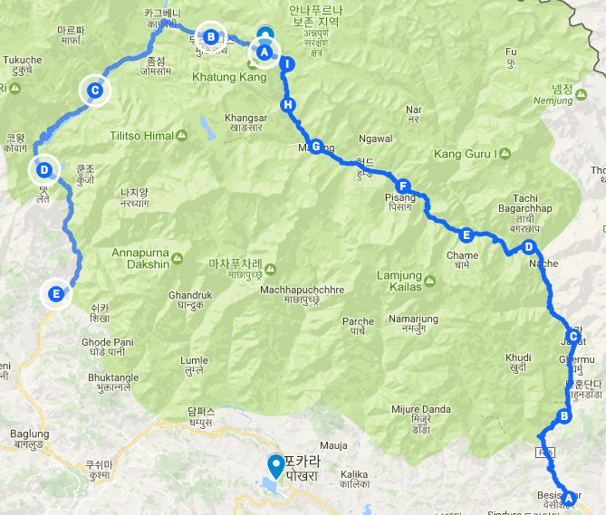
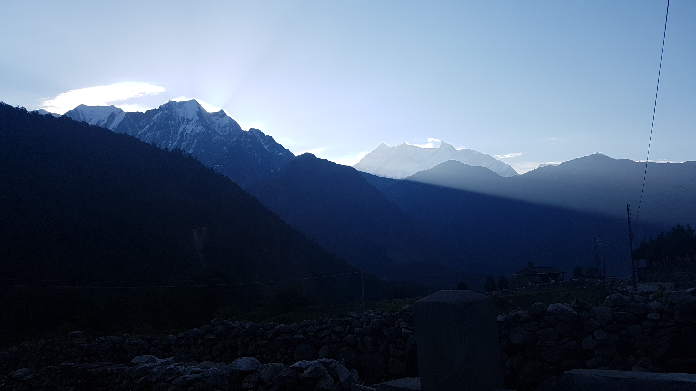
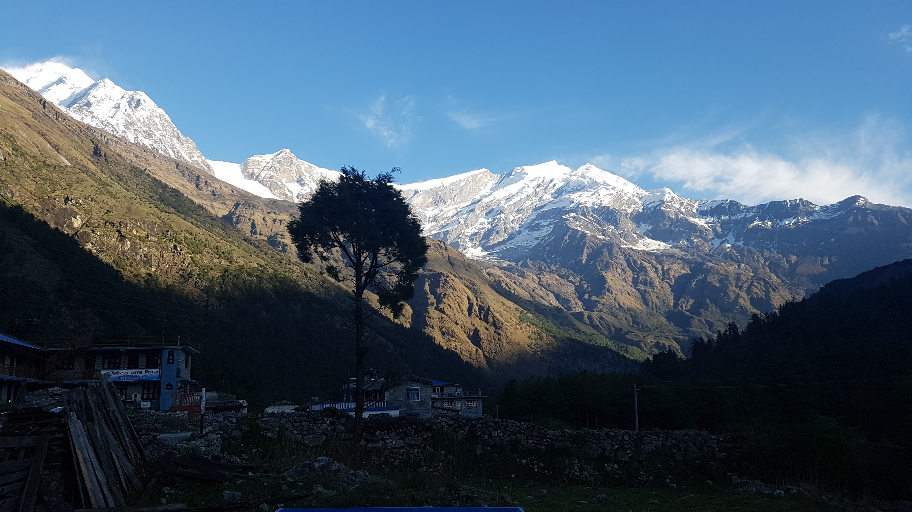
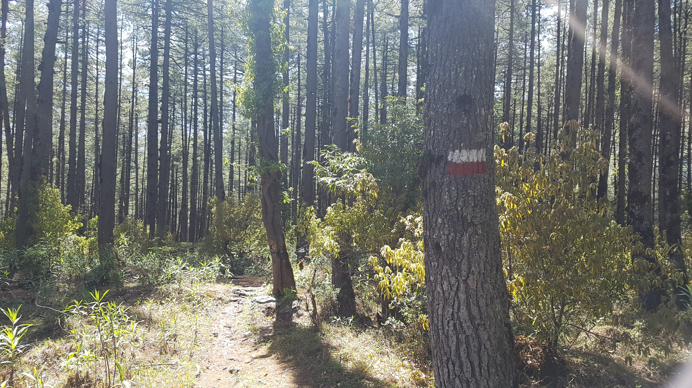

layout: post
title: 오딧세이아..
subtitle: "여행 D+21, 안나푸르나 D+13"
date: 2017-04-24 12:00:10
tags: 포스팅
header-img: img/post-travel-21.jpg
오늘 이동한 경로 (D) -> (E) (총 20km)
Kalopani() -> Tatopani()

오랫만에 푹잤다. 새벽중간에 깨지않았다. 매일 10시정도에 자고 6시정도에 깨는데 이런 생활방식 좋은것 같다. 한국에 있을때는 그나마 10시부터 재미있는일이 시작되는데 이곳에는 10시면 이미 스펙타클하고 재미있는 일들이 다 끝나고도 남는다.
아침에 칼로파니 마을을 구경할겸 산책했다. 그동안 트레캉하면서 너무 급하게 떠나게되어 산책할 여유가 없었다. 정말 평화롭고 아름다운 마을이라는 생각이 들었다. 산골짜기에 위치해서 새소리도 크게 울리고 옆에는 파인트리?숲도 있다. 이번 트레킹하면서 만났던 마을 중 가장 마음에 들었다. 하루 더 묶고 싶을 정도였다. (하지만 일정상 어려워보임) 나중에 휴가를 내서 또찾아오고 싶은 마을이다. 조용한 산골 마을에서 쉬고 싶을때 이곳에 오면 좋을것 같았다.(고도 2500미터임) 방법은 대한민국 ㅡ 카트만두(비행기) ㅡ 포카라(비행기) ㅡ 지프타고 칼로파니. 조금 어렵긴하다.
숲도 잠시 들어가봤다. 오랫만에 이런 숲에 들어오니 너무 기분좋았다. 지금 계절때문인지 모르겠는데 의외로 이 트레캉 구간에 숲이 거의 없었다. 오늘은 이 숲을 통과해 Guasa로 가기로 했다.
아침을 먹으며 또 늑장을 부렸다. 구글북스에서 제임스글락의 책 인포메이션 서문을 읽었는데 무척 흥미로웠다. 모든 것은 정보다. 정보가 세상의 일부가 아니라 세상이 정보의 일부라는 새로운 관점과 인사이트를 얻을 수있을것 같았다. 오렛만에 비문학 서적을 읽으니 생각이 끊이질않는다. 오늘은 그냥 이곳에서 책이나 읽을까? 오랫만에 진리탐구를 하니까 기분이 너무 좋고 상쾌하다. 여행하며 틈틈히 이런책을 읽어야겠다.
인간은 왜 항상 여행을 꿈꿀까. 여행은 다시말하면 떠돌아 다니는것이다. 인류가 농경으로 인해 정착 생활을 시작한지는 만년밖에 되지 않았다. 반면 수십만년동안 인간은 생존을 위해 항상 떠돌아다녔다. 고정된 집 없이 이동하는것은 유전자에 각인된 본능이라는 생각이 들었다. 그렇기 때문에 거의 모든사람이 여행을 꿈꾸는것 아닐까? 본능이기 때문이다.
오늘 묶었던 숙소가 너무 마음에들어서 계산을 하고 나갈때 이 마을이 너무 좋고 숙소도 좋았다고 칭찬했더니 지배인? 람이 무척 좋아했다. 오늘 차길말고 숲길로 타토파니까지 갈거라고 말했다. 지도를 보여주며 이길이 맞는지 물어봤는데 본인이 직접 시작지점으로 데려다 준다고 했다. 운좋게 길안내를 받아서 기뻤다.
아쉽게도 어제 맛났던 웃긴 프랑스 아저씨(이름은 파스칼)와 해어지게 되었다. 지금 허리에 살짝 통증이 있어서 테이핑을 하고 있는데 좋은 오일 마사지 이름을 알려줬다. 타토파니 가서 한번 받아봐야겠다. 두 자전거 가이들과도 인사했다. 이름은 또 까먹었다. 타토파니에서 다시 만나기로 했으니 다시 물어보기로 했다.

 칼로파니 마을의 아침
칼로파니 마을에서만 보이는 안나푸르나 1봉(8091m)의 모습
아름다웠던 마을 칼로파니를 떠나서 숲길로 진입했다. 나는 이곳이 정말 마음에 든다. 나는 안나푸르나 트레킹을 하며 숲길을 기대했는데 95퍼센트가 지프차가 지나다니는 먼지길이다. 다 좋았는데 딱 이것만 마음에 들지 않았다. 그래서 왠만하면 숲길로 이동하려고 한다. 조금 더 오래걸리고 돌아가는 길이지만 차길로 내내 고생하며 가느니 즐기면서 가는게 좋을것 같았다.
칼로파니근처의 숲은 진짜 멋졌다. 이곳이 더욱 마음에 들었다. 다왈라기리 닐기리 안나푸르나 1봉을 다볼수있다. 이 세 산이 정말 멋있게 생긴 산이기도 하다. 약 두시간을 숲을 따라 계속 걸었다. 어제 이러다가 길을 잃어서 개고생한 경험이 있기때문에 트레킹의 주의사항을 철저히 지켰다. 그것은 이정표를 쫒아가는것이다.
안나푸르나 써킷 트레킹을 구간에는 항상 빨간색 흰색으로 칠해진 이정표가 있다. 가는길에 이 표지를 만나면 정상적인 길로 가고 있는것이다. 어제까지는 이 수칙을 별로 지키지 않았었다. 그래서 어제 크게 한번 혼났던 경험을 한것이다. 오늘은 한발한발 매 순간마다 이 표지를 유심히 살피며 신중하게 걸었다. 그러다가 이 표지를 만나기라도 하면 내게 제대로 가고있다는 생각에 쾌감마져 들었다. 개고생을 하지 않으려면 이정표를 철저히 따라야한다. 조금이라도 다른 길로 진입하기 시작하면 겉잡을수 없이 엉뚱한 길로 가게된다. 산길은 그런곳이라는 사실을 큰 비용을 들여 깨달았다. 끊임없이 방향이 맞는지 확인하고 신중하게 한걸을한걸음을 옮겨야한다. 이렇게 오늘 나는 무사히 숲길을 통과했다. 기뻤다.
며칠째 아무도 없는길을 혼자걷다 보니 사람이 그립기도 하다. 어제는 혼자다니는데도 외롭지 않다고 깝쳤었는데 오늘은 좀 외롭다. 내가 따로 숲길로 가서 그런건지 모르겠지만 정말 사람이 1도 없다. 신기할 정도다. 지나가다가 트레커를 만나면 정말 기쁠것같다. 그게 한국인이면 더 반가울것 같다. 관계에 치여 이곳에 왔지만 정작 사람이 없으니 관계가 그립다.

오딧세이아
오전에 사나운 개들을 두차례나 마주쳤다. 첫번째는 숲길 트레킹 구간을 가는데 개 3마리가 갑자기 등장했다. 갑자기 나에게 엄청 짖기 시작했다. 갑자기 놈들이 나에게 달려오려고 했다. 다행이 두놈은 목줄이 있었는데 한놈이 없었다. 무서워서 뒷걸음 쳤다. 다행이 주인이 나타나서 도와줬다. 계속 나한테 짖는데 엄청 무서웠다. 계속 평화롭다가 갑자기 심장이 쫄깃해졌다. 이런것도 여행의 묘미곘다.
어제 칼로파니에 도착하기 직전에 멀리 개가 있는것을 보았는데 프랑스 아저씨가 둘 두개를 집어들고 가는것을 봤다. 이곳 개에 물리면 절반정도는 광견병에 걸려서 2일이내로 병원에가서 주사를 맞아야 한다고 한다. 그래서 개가 달려오면 돌을 던지기 위해 미리 집어들었다고 했다. 다행이 지나가는게 개가 달려들지 않았다. 근데 갑자기 내 허벅지를 누가 깨물었다. 나는 겁나 깜짝놀라서 뒤돌아 봤더니 아저씨가 장난친것이다. 아저씨랑 네팔청년이 겁나 낄낄대며 웃었다. 근데 나도 웃겨서 따라 웃었다.
점심먹기 바로 직전 길에서 개 두마리가 또 나한테 짖었다. 둘다 목줄이 없었다. 나는 어제 프랑스 아저씨가 내게 가르쳐준 것을 떠올렸다. 천천히 뒤로 가서 돌을 찾아서 집어들었다. 개가 짖으며 나한테 오고 있었다. 저 멀리 앉아있는 아저씨한테 일단 도움을 요청했다. 그래도 소용없으면 돌을 던지려고 했다. 다행이도 개가 아저씨한테는 쪽도 못쓴다. 무사히 통과했다. 한가지 실수한건 돌을 두개 집어야 한다는것이다. 왜냐하면 개가 두마리였기 때문이다.
나는 이틀전까지만 해도 최고 높이 쏘롱라 패스를 넘었기 때문에 트레킹이 다 끝난것같은 느낌을 받았었다. 그런데 막상 어제오늘 정말 개고생을 하고 있다는 느낌을 받았다. 길을 잃어 낭떨어지로 떨어지지 않으려고 발버둥치기도 하고 걷다가 몬스터를 만나서 위협을 당하기도 했다. 소설 오딧세이아가 떠올랐다. 전쟁을 끝내고 마음 편하게 집으로 돌아가려고 했는데 정작 집에는 가지도 못하고 10년동안의 개고생만한 주인공을 그린 그 소설..
음식이 만들어지기 까지 약 20분정도가걸리기 때문에 앞으로 그시간을 잘 활용해서 일기를 쓰면 좋을것 같았다. 일기쓰는것도 꽤 오래걸리는 작업이라 최대한 빨리 마치는게 좋을것 같았다. 다행이 오늘 오전까지의 일은 점심시간을 이용해 모두 마무리 했다. 앞으로 모든 여행 길에 이렇게 시간을 활용해야 겠다. 윗글은 모두 점심시간을 이용해 작성한 것이다.
점심을 먹고 나가는데 주인 아주머니가 어디서 묶었냐고 물으신다. 어제 칼로파니 게스트 하우스에서 묶었다고 했더니 본인 동생이 운영하는 게스트하우스라고 한다. 이런 우연이 있나, 람이 나 배웅해줬다고 말했더니 누군지 알고있었다. 요리사라고 한다. 암튼 신기했음.
지금 나말고는 걷는사람이 하나도 없어서 물어봤다. 오늘 이 롯지를 지나친 사람이 몇이나 되는지, 물었더니 이침 8시반즘 30여명이 지나갔다고 한다. 그리고 내가 지나친 점심즘은 한명도 없었다고 한다. 결국 다들 나보다 하나 더 앞선 마을 게사에서 8시경에 출발했던 것이다. 다들 지나다니는 코스가 이렇게 획일적일 줄이야. 나는 칼로파니 -> 게사 -> 이곳 롯지에 도착 했기때문에 늦었다. 이것이 지금 나만 트레킹하고있는 이유이다.
오늘 타토파니까지 20km를 걸어야한다. 걸어도 걸어도 끝이 안보인다. 게다가 지금 숲길로 이동하고 있기 때문에 오르막 내리막이 너무 자주 있다. 확실히 자동차가 다니는 도로보다 오래걸리고 어려운 코스이다. 힘들땐 위에보지말고 땅만보고 가다보면 어느순간 도착해 있다. 정말 힘들때는 위를 처다보지 않는다.
계속 숲길만 걸으니 너무 힘들었다. 그리고 시간도 너무 늦었다. 벌써 4시다. 숲길이 너무 오르락내리락해서 힘들었다. 목적지 까지 6km남았다. 이제는 차길로 가려고 다리를 건너려고하다가 현지인에게 한번 더 물어봤더니 이제 계속 평지라고 해서 그냥 가던 숲길로 계속 가기로 했다. 가다보니 다리 하나가 더 나왔다. 아무리 생각해도 앞으로 또 오르막이 있을것 같았다. 그리고 지금이 다리를 건널 수 있는 마지막 기회였다. 나는 차길을 선택했다. 이제 힘들어서 숲길을 즐기기도 어렵다.
정말 운이 좋게도 차길로 가자마자 비가 내렸다. 차가 지나다닐 때마다 흙먼지가 안날린다!! 안나푸르나가 나를 이곳에 허락했기 때문에 일어날 수 있는 일이었다. 4년전 마추픽추 트레킹때 가이드에게 배운것이 하나 있다. 비가올때 내가 우비를 입으려 했더니 그는 왜 우비를 입냐먼서 enjoy water 하라고 했다. 그말이 맞았다. 그 생각이 또 났다. 나는 이런 작은 비는 이제 우비를 입지 않는다. 어차피 나는 땀때문에 다 젖어있다. 그러다가 갑자기 비가 많이 왔다. 어쩔수없이 고어텍스 자켓을 입었다. 그동안 비가 한번도 내린적이 없었는데 드디어 비싸게 주고 산 고어텍스 자켓을 이용한다.
아침에 읽었던 책 인포메이션이 또 생각났다. 모든것이 정보라먼 지금 내리는 비도 정보인가? 모든것을 정보화 할 수 있다는것이 맞는건가? 모든 것이 정보 그 자체인건가? 생명체는 정보를 전달하는 유기화합물 그 자체인가. 정보 자체인 유기화합물인가? 너무 궁금하다 책을 읽으면서 알아내야 겠다. 얼른 책을 읽으면서 알아내야 겠다.
정말 하루도 쉬운날이 없다. 쏘롱라 패스를 넘은 뒤에 계속 쉽게 하산할 수 있을줄 알았다. 전혀 아니다. 더 많은 거리를 걷기 때문에 훨씬 더 힘든것 같다. 군대에서 몇박몇일 전체 행군 거리가 20?40? km였던것 같은데 나는 그걸 하루에 걷고 있다. 게다가 고지도 더 높고 베낭 무게도 무척 무겁다. 200km 행군을 하고 있는것이다. 군대에있을때 죽기보다 싫었던 행군을 지금은 돈을 내고 하고 있다.
드디어 목적지 타토파니에 도착했다. 나는 온천 생각밖에 없다. 여기에 온천이 있다고 했기 때문이다. 딱 적절한 위치에 온천이 있다. 대부분 트래커들이 이곳에서 트레킹을 마치기 때문이다. (나는 고레파니 - 푼힐전망대까지 찍을 계획) 도착하니 한국인 3명이 보였는데 일부러 인사는 하지 않았다. 다수의 무리가 있을때 내가 먼저 인사할 필요없는것 같다. 언젠간 또 만나겠지 하고 아무 숙소로 들어갔다.
숙소에 짐을 놓고 바로 온천으로 향했다. 그런데 멀리 빨간머리가 보였다. 패트릭이었다!. 이틀동안 헤어졌던 패트릭을 만나니 무척 반가웠다. 게다가 로즈와 라미로도 있었다!! 타쿠어와 비샬도 있었다. 드디어 다시 만난것이다. 우리는 기쁨에 겨워 서로 인사했다. 내가 오늘 타토파니까지 버스를 전혀 타지않고 도착했다는것을 강조했다. 뿌듯했다. 아마 오늘이 마지막으로 보는날일 것이다. 시원?섭섭했다. 패트릭은 시카고에서 나중에 보면되고 라미로는 곧 남미여행을 갈때 부에노스아이레스에서 보기로 했다. 이들때문에 2주동안 트래킹이 외롭지 않았다. 짧은 시간이었지만 많은 정이들었다. 정말 오랜 친구가된 느낌이다. 그리울것 같다.
온천에서 한국인들과 인사했다. 대학 3년 휴학을 하고 2년 세계여행을 하고 있는중이라고 한다. 멋진 청년들이다. 정말 9개월 세계여행은 아무것도 아니다. 이들이 얼마나 멋진 여행을 할지 기대된다. 이들도 나처럼 내일 고레파니에 간다고 한다. 트레킹 구간에서 또 만날지도 모르겠다. 뜨거운 온천에서 피로를 풀고 숙소로 돌아와서 저녁을 먹었다. 고생한 나에게 갈릭 페퍼 스테이크를 선사했다. 확실히 높은 고지 식당보다 훨씬 쌌다. 6천원정도 하는 가격이다. 진짜 스테이크 고기는 아닌것 같았지만 부드럽고 맛있었다! 모든 일기를 마치고 나는 이제 인포메이션을 읽을것이다. 끝!!